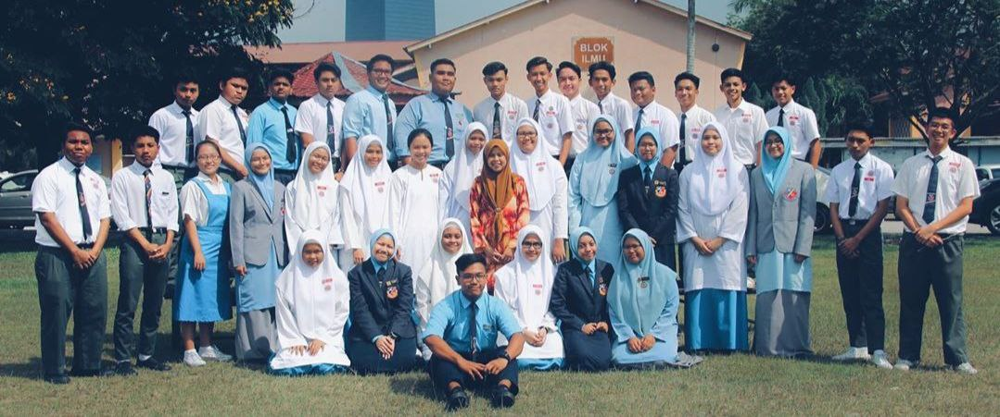

"🎓EDUCATION IS THE MOST POWERFUL WEAPON TO CHANGE OUR WORLD🎓"
🎓MY KINDERGARTEN🎓
From 2007 until 2008, I went to Tabika Perpaduan Desa Pandan, Kuala Lumpur for early education. I entered my kindergarten on 2007 and graduated on 2008.
I used to cried almost everyday in the morning as I was having a hard time to wake up to kindergarten. It is because as I was still a child that time, I wanted my parents to accompanied me all the time. However, I had so much fun at kindergarten playing around with my friends to the point I did not want to go home. Look at that plot twist.🤣
🎓MY PRIMARY SCHOOL🎓
Since 2009 until 2014, I went to Sekolah Kebangsaan Taman Maluri, Kuala Lumpur. Pictures above was myself in standard 1 and standard 6. Not too much different right? Except for the fact that I went from freehair to hijab girl.😂 I became a school prefect when I was in standard 4 until the end of my primary school era and it was one of the best experience I ever had as I got the opportunity to obtain basic leadership skills at young age.
In terms of big examination, I got 4A during trial of Primary School Achievement Test (UPSR). Then, during the real examination of Primary School Achievement Test (UPSR), I only got 2A. I was quite disappointed that time as my trial was better compared to real one, but I am grateful for having my parents as my supporters. They told me to not give up as I have tried my best and everyone has their own sustenance.
🎓MY SECONDARY SCHOOL🎓

I studied at Sekolah Menengah Kebangsaan Datok Lokman, Kuala Lumpur. Until this day, my secondary school has 2 session, form 1 and form 2 for evening session meanwhile form 3 until form 5 in morning session. I started my journey as secondary school student since 2015 until 2019. Basically, I became a school prefect since form 1 until form 5 and I gained a lot of experience through various program and event.
There are 2 important examination which was Form 3 Assessment (PT3) and Malaysian Certificate of Education (SPM). I got 6A for my Form 3 Assessment (PT3) and that was one of the happiest moment in my life. On the other side, I got 3A for my Malaysian Certificate of Education (SPM). I have a lot of B+ and it was quite near to A- right?😣 However, even until now, I am so happy to get A+ for my favourite subject, History.
Picture above was myself during graduation day and my class photoshoot day for our school magazine. I will forever have soft spot for this picture as it felt like a pre-farewell of my school era.
🎓MY TEMPORARY FORM 6🎓
Before I accepted an offer to further my study in Diploma in Library Management, I went to form 6 for a while which was located at Kolej Tingkatan Enam Pudu Jaya, Kuala Lumpur. I was one of social science students and took 4 main subjects which are Bahasa Melayu, Pengajian Am, Economics, and History, including Malaysian University English Test (MUET). My form 6 occurred during Covid-19 pandemic. Therefore, I had experience of attending online class. Through form 6, I got to expose myself with various online learning platform such as Google Classroom, Google Meet, Webex, Zoom, and Microsoft Teams. Picture above was me on my last day at Kolej Tingkatan Enam Pudu Jaya and a group photo with my classmates during semester 1.
🎓MY UNIVERSITY🎓
I accepted an offer for Diploma in Library Management at Universiti Teknologi Mara (UiTM) Merbok, Sungai Petani, Kedah. It was my first choice in UPUOnline and I was so happy to get the course I desire in second intake.
In terms of my results in every semester, my GPA in semester 1 is 3.83 and I am so grateful to got Dean list. In semester 2, my GPA is 3.10 meanwhile 3.14 in semester 3. Wish I could get a better result for my last semester. What can I say, I hope every students will be able to prioritize their mental health because our mental well-being is one of the most important element in determining our result for every semester. Keep going!
Picture above is myself after Introduction to Web Content Management and Design (IMD311) class ended and also my group photo with my wonderful classmates.
As I created this personal website, I am already on my last semester. Kindly pray for my classmates and I. We hope we are able to pass this final semester with flying colours.😊